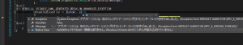

UWPでカメラやおよそ一般人が使うとは思えない機器から入力された画像データを画面にプレビューして処理するアプリを仕事で作っています。海外の子会社が作っているプロダクトですが。
Problem
ぐらばく様のバックグラウンド スレッドで UI 要素を作るとメモリリークする (WPF) @karno様のバックグラウンドスレッドでUI要素を作るともっと問題は深刻かもしれない。(WPF) で話題になっている案件ですが、UWPでもこの手の問題は起きるのでしょうか？ 結論から言うと問題は起きないと思います。 というのも、UWPにおいてバックグランドスレッドにてDependencyObjectを作成することはできません。すべてDispatcherを経由する必要があります。 例えば、 [code lang=”csharp”] await Task.Run(()=>new WriteableBitmap(200, 200, 96, 96, PixelFormats.Bgr32, null)); [/code] みたいにしようならば、 
{kind=link}
こうなります。
Resolution
きちんとDispatcherを経由しましょうってことですね。 ちなみに、ViewModelとかまでDispatcherをもってくるのではなく、DispatcherServiceを用意して、Dispatcherを抽象化するべきです。 例えば、 WPF向け [code lang=”csharp”] using System; using System.Threading; using System.Threading.Tasks; using System.Windows.Threading; using Shared.Services;
namespace WPF3.Services { public sealed class DispatcherService : IDispatcherService { private readonly Dispatcher _Dispatcher;
public DispatcherService(Dispatcher dispatcher) { this._Dispatcher = dispatcher; }
public async Task SafeAction(Action action) { if (!this._Dispatcher.CheckAccess()) await this._Dispatcher.InvokeAsync(action); else action.Invoke(); }
}
} [/code] UWP (Desktop)向け [code lang=”csharp”] namespace UWP3.Services { public sealed class DispatcherService : IDispatcherService { private readonly CoreDispatcher _Dispatcher;
public DispatcherService(CoreDispatcher dispatcher) { this._Dispatcher = dispatcher; }
public async Task SafeAction(Action action) { if (!this._Dispatcher.HasThreadAccess) await this._Dispatcher.RunAsync(CoreDispatcherPriority.Normal, action.Invoke); else action.Invoke(); }
}
} [/code] でPrismのUnityContainerあたりでDIを使って切り替えることができます。 こんな感じ。 [code lang=”csharp”] protected override Task OnInitializeAsync(IActivatedEventArgs args) { var dispatcher = Window.Current.Dispatcher;
var unityContainer = new UnityContainer(); unityContainer.RegisterInstance(new DispatcherService(dispatcher)); unityContainer.RegisterInstance(new MainPageViewModel(unityContainer.Resolve()));
Container = unityContainer;
return base.OnInitializeAsync(args); } [/code]
Conclusion
そもそもバックグランドで生成できないようにする、というアプローチは安全かもしれませんね。